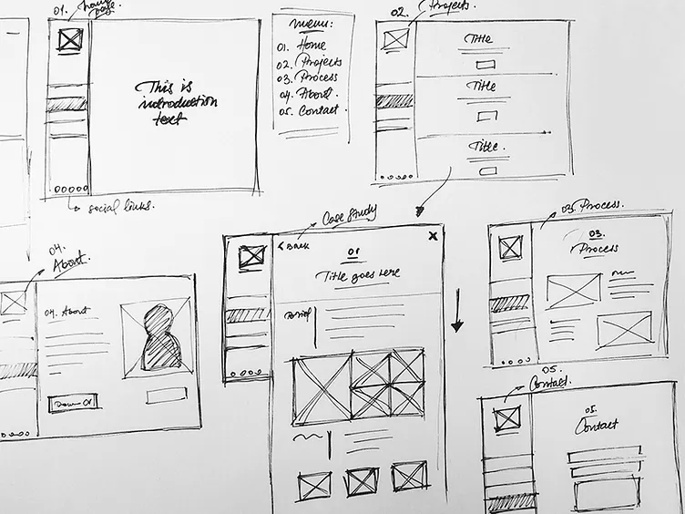
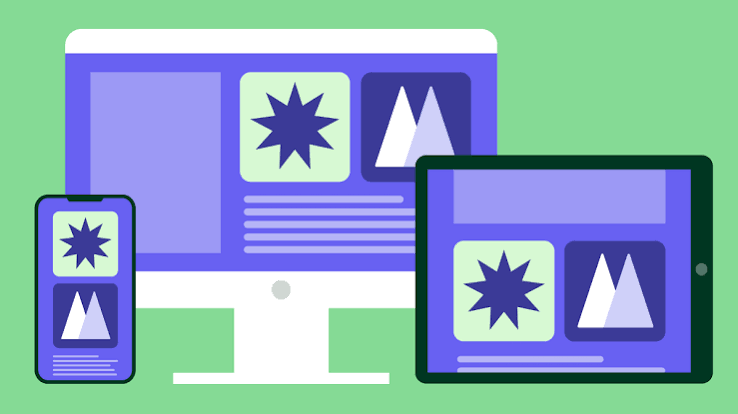

Personal Portfolio Website
A simple personal website designed using HTML and CSS to introduce myself, share my technical interests and present my work.
Technologies: HTML, CSS
View Project DetailsWelcome to my portfolio page. As a Computer Science student at the University of Hertfordshire, I am interested in developing my practical computing skills. This section is where I will share my university assignments, personal projects and other work as I progress through my studies.
Below are examples of the types of projects I am interested in developing during my studies.

A simple personal website designed using HTML and CSS to introduce myself, share my technical interests and present my work.
Technologies: HTML, CSS
View Project Details
A sample project idea focused on creating web pages that adjust to different screen sizes, including desktops and mobile devices.
Technologies: HTML, CSS
View Project DetailsA sample project idea involving basic programming exercises to improve problem-solving and logical thinking skills.
Technologies: To be confirmed
View Project Details